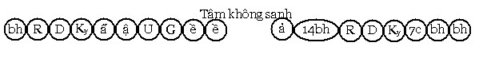
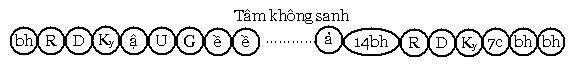

Bài 19 LỘ NHẬP THIỀN DIỆT THỌ TƯỞNG I. ĐỊNH NGHĨA Vị Thánh A La Hán hay Tam Quả muốn tịnh chỉ các danh uẩn, hưởng Vô dư Níp-Bàn (parinibbāna) tạm thời. Tâm lộ diễn ra truớc khi danh uẩn diệt gọi là tâm lộ nhập thiền Diệt (nirodhasamāpatti). II. NGUYÊN NHÂN NHẬP ĐỊNH DIỆT. Vị Thánh Tam quả hay Tứ quả chán nản sự sinh diệt của pháp hành, nên tu tiến để đạt đến Định Diệt, với ý nghĩ rằng: "Ta tạm thời hưởng hương vị Vô dư Níp-Bàn, bằng cách nhập vào Định không tâm ". Biểu đồ tâm lộ. Tâm lộ nhập Diệt thọ tưởng định diễn tiến như sau: Người độn căn:  Người lợi căn:  Lộ này có được: - Sát-na: 8 hay 7 sát-na tâm khách III. LÝ GIẢI 1. Những việc làm trước khi nhập định Diệt. Vị Thánh Tam quả hay Tứ quả trước khi muốn nhập thiền Diệt, phải làm 4 phận sự trước tiên (pubbakicca) như sau: - Nānabaddha- avikopana: Chú nguyện cho các vật dụng (parikkhāra) ngoại thân của mình không vì một lý do nào bị hư họai. - Saṅghapaṭimānana: Chú nguyện tự xuất khởi thiền Diệt khi chư Tăng muốn triệu tập. - Satthupakkosana: Chú nguyện tự xuất khởi thiền Diệt khi Bậc Đạo sư muốn gặp mặt. - Addhānapariccheda: Quán xét tuổi thọ của mình, có sống được tối thiểu 7 ngày hay không? Khi quán xét thấy tuổi thọ mình không thể sống đến 1 tuần lễ nữa, vị Thánh Bất lai sẽ không nhập thiền Diệt, dành thời gian đó để tu tiến thành đạt A La Hán. Còn vị Thánh A La Hán sẽ: * Hoặc chú nguyện xuất khỏi thiền Diệt trước ngày viên tịch, để giáo giới các đệ tử hay từ giả các bậc đồng phạm hạnh; * Hoặc không nhập thiền Diệt. Trong bốn việc tiên quyết ấy, ba điều đầu có thể không chú nguyện cũng được, nhưng điều thứ tư bắt buộc phải làm nếu vị ấy ở cõi người. Nếu ở cõi chư Thiên hay Phạm thiên giới có thể không làm điều gì cả (nếu có cũng chỉ là điều thứ tư). Trong lúc nhập thiền Diệt, không một tai hại nào xảy ra đến tính mạng cũng như những vật tùy thuộc của vị ấy. Như Tôn giả Sañjiva đang nhập Diệt định, một nhóm mục đồng thấy thế tưởng Ngài đã chết, chúng đem cỏ khô phân bò chất lên người Ngài để hỏa táng, nhưng ngay cả một chéo y của Ngài cũng không bị cháy. Cho dù Ngài không chú nguyện, nhưng khi Đức Đạo sư hay chư Tăng muốn gặp mặt, cử một vị Tỷ kheo sứ giả đến đứng vừa tầm nghe của vị ấy bảo rằng: "Thưa Tôn giả, Đức Đạo sư (hay chư tăng) muốn gặp Ngài, xin Ngài hãy lập tức xả Thiền diệt ngay bây giờ". Chỉ vậy thôi, vị Thánh đang nhập thiền Diệt, lập tức xuất định ngay. Tuy nhiên, vị Thánh có chú nguyện 3 điều trên, khi Đức thế Tôn giảng pháp hoặc chế định học giới hay chư Tăng nhóm họp, không cần phải cử Sứ giả đến, tự khắc vị ấy xuất định đi đến gặp Đức phật hay chư Tăng, nếu không chú nguyện và không có Sứ giả thông báo, vị Thánh không xuất định. Như trường hợp Ngài Rohāna nhập thiền Diệt, trong khi chư Tăng đang hội nhau tìm vị có nhân duyên nhiếp phục vua Milanda, Ngài Rohāna vắng mặt nên bị chư Tăng phạt. 2. Diễn tiến. Vị Thánh muốn nhập thiền Diệt, tìm 1 trú xứ thanh vắng, lần lượt an trú vào thiền tịnh theo thứ tự từ Sơ thiền đến Vô sở hữu xứ thiền, khi xả thiền Vô sở hữu xứ, Ngài thực hiện 4 việc cần làm trước ở trên rồi nhập vào thiền Diệt. Diễn tiến tâm lộ như sau: Rúng động, Dứt dòng, Hướng ý môn, Chuẩn bị, Cận hành, Thuận thứ, Chuyển tánh, 2 sát-na thiền Phi tưởng phi phi tưởng, dứt sát-na thứ 2 thiền Phi tưởng phi phi tưởng xứ, danh uẩn diệt mất trong vòng 7 ngày. Khi xuất định Diệt, tâm Thánh quả mà vị ấy có (Tam Quả hay Tứ Quả) sanh khởi trước tiên, tiếp theo là 14 hữu phần cơ bản, tiếp theo là lộ ý môn bình nhật sanh khởi. Nên ghi nhận rằng: Đối với cõi người tâm không sanh trong vòng 7 ngày, riêng cõi chư Thiên, Phạm Thiên thời gian tâm không sanh bao lâu là theo ý vị ấy. Tầng thiền vị Thánh nhập định Diệt phải có trước khi đắc Tam hay Tứ Đạo. Vị Thánh Tam quả và Tứ quả muốn an trú vào định Diệt, phải là vị có được Ngũ thiền trước khi chứng đắc Tam Đạo hay Tứ Đạo. Theo quy luật, thọ (vedanā) đổng lực phải cùng một loại, từ sát-na Chuẩn bị cho đến hai sát-na tâm thiền Phi tưởng phi phi tưởng xứ đều là xả thọ, như vậy tâm Quả Siêu thế sanh khởi trước tiên trong lộ xuất Định cũng phải câu hành với Xả thọ. Điều này đưa đến hệ luận: "Không phải vị Thánh Tam Quả hay Tứ Quả nào cũng nhập định Diệt được, vị Thánh Tam hay Tứ Quả muốn nhập định Diệt, phải đắc Ngũ thiền trước khi chứng Tam Đạo hay Tứ Đạo". Lại nữa, vị Thánh Tam Quả hay Tứ Quả phải làm chủ được các tầng thiền, tức là phải an trú trong thiền Chỉ tịnh từ Sơ thiền cho đến Phi tưởng phi phi tưởng xứ thiền theo như ý. Vì sao tâm thiền Phi tưởng phi phi tưởng xứ chỉ có 2 sát-na, không ít hay nhiều hơn? Đáp: Do tác ý của vị Thánh. Vị Thánh có tác ý "đạt được trạng thái không tâm, hưởng Vô dư Níp-Bàn tạm thời", không có tác ý an trú trong thiền Phi tưởng phi phi tưởng xứ. Nói cách khác vị Thánh chỉ mượn 9 bậc thiền để đi đến trạng thái không tâm, chứ không trú lại bất cứ tầng thiền nào. Ví như Đức vua đi từ Sāvatthī đến Sāketa, con đường từ Sāvatthī đến Sāketa có thù diệu tốt đẹp, Đức vua tỏ lời khen ngợi "con đường này thật tốt đẹp" nhưng Đức vua không có ý trú lại bất cứ nơi nào trên con đường ấy. Cũng vậy, vị Thánh tuy nhận biết rằng thiền Phi tưởng phi phi tưởng là an tịnh thù thắng hơn tất cả các tầng thiền, nhưng Ngài chỉ mượn "đường", để đến trạng thái Vô dư Níp-Bàn tạm thời, chứ không an trú trong bất cứ tầng thiền nào. Về 2 sát-na tâm thiền. Tâm sinh diệt rất nhanh, để cắt đứt cảnh đang có không thể làm ngay được, phải có ít nhất 2 sát-na (như 2Hữu phần Rúng động- Dứt dòng hay 2 sát-na Na cảnh) thì cảnh Khách mới chấm dứt. Đối với lộ ý thông thường sau sát-na đổng lực thứ 7, tâm trở lại hữu phần là do cảnh đã muội lược nên tự diệt, còn cảnh thiền trong lộ đắc thiền cũng tự diệt, sự diệt này không do tác ý của hành giả. Còn lộ nhập thiền thì đã trải qua nhiều sát-na tâm thiền. Trong lộ nhập thiền Diệt, tác ý của vị Thánh là "cắt đứt mọi cảnh, cho dù đó là cảnh chế định, hữu vi hay vô vi, để đạt đến trạng thái không tâm". Lại nữa, phải là 2 sát-na Phi tưởng phi phi tưởng để tịnh chỉ tâm hành (Thọ và Tưởng), vì Phi tưởng phi phi tưởng xứ thiền là trạng thái dường như có (thọ) Tưởng dường như không có (thọ) Tưởng, rất thuận lợi trong việc tịnh chỉ tâm hành, các sát-na thiền khác không có tiêu chuẩn này vì các danh pháp hiện rõ. Có ví dụ về thiền Phi tưởng phi phi tưởng xứ như sau: Vị trưởng lão cùng với đệ tử đi khất thực, gặp một vũng nước trên đường, vị đệ tử nói: "Bạch Ngài có nước" - Vậy hãy mang nước đến cho ta tắm rửa. - Bạch Ngài! Không có nước. Ý nghĩa này như thế nào? Tuy có nước nhưng không đủ để rửa mặt, tắm ... Cũng vậy tầng thiền Phi tưởng phi phi tưởng xứ tuy các danh pháp có nhưng "không đủ" sức hiện bày, tức là ở trạng thái cực kỳ vi tế, dường như có dường như không. 3. Ở cõi nào? Lộ tâm này chỉ có ở cõi ngũ uẩn đắc thiền, vì ở cõi Vô Sắc không thể tuần tự nhập từ Sơ thiền đến Phi tưởng phi phi tưởng thiền đạt đến định Diệt. Có 4 lộ tâm Diệt thọ tưởng định là: 2 bậc Thánh nhân (Tam, Tứ Quả) với 2 hạng người (độn cănm lợi căn), thành ra bốn lộ. -ooOoo- Ðầu trang | Mục lục | 01 | 02 | 03 | 04 | 05 | 06 | 07 | 08 | 09 | 10 | 11 | 12 | 13 | 14 | 15 | 16 | 17 | 18 | 19 | 20 | 21 | 22 | 23 | 24 | 25 |